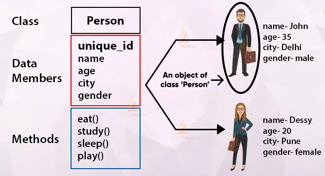

What Does Java Object Mean?
A Java object is a member (also called an instance) of a Java class. Each object has an identity, a behavior and
a state.

The state of an object is stored in fields (variables), while methods (functions) display the object's
behavior.
Objects are created at runtime from templates, which are also known as classes.
In Java, an object is created using the keyword "new".
Java objects are very similar to the objects we can observe in the real world. A cat, a lighter, a pen, or a car
are all objects.
They are characterized by three features:

- Identity
The identity is a characteristic used to uniquely identify that object- such as a random ID number or an address in memory. Simpler objects like a lighter may have only two states (on and off) and behaviors (turn on, turn off), but they still have an identity (that item's manufacturing ID, for example).
- State
A Java object's states are stored in fields that represent the individual characteristics of that object. For example, in a first-person shooter video game, a pistol with an eight-bullets clip has nine states in total: one for each bullet (e.g. 8 bullets, 7 bullets, 5 bullets, etc.), plus another one when it's empty (0 bullets).
- Behavior
The object's behavior is exposed through methods that operate its internal state. For example, the “shooting”
behavior will change the state of the pistol from “8 bullets'' to “7 bullets” and so forth every time the player
shoots with the gun.
The “reloading” behavior will bring back the pistol into the original “8 bullets" state.
There are three steps to creating a Java object:
- Declaration of the object.
- Instantiation of the object.
- Initialization of the object.
When a Java object is declared, a name is associated with that object. The object is instantiated so that memory space can be allocated. Initialization is the process of assigning initial values to the object attribute. Object properties are consistent through all objects from the same class, unlike class properties which are applied only to that specific class.